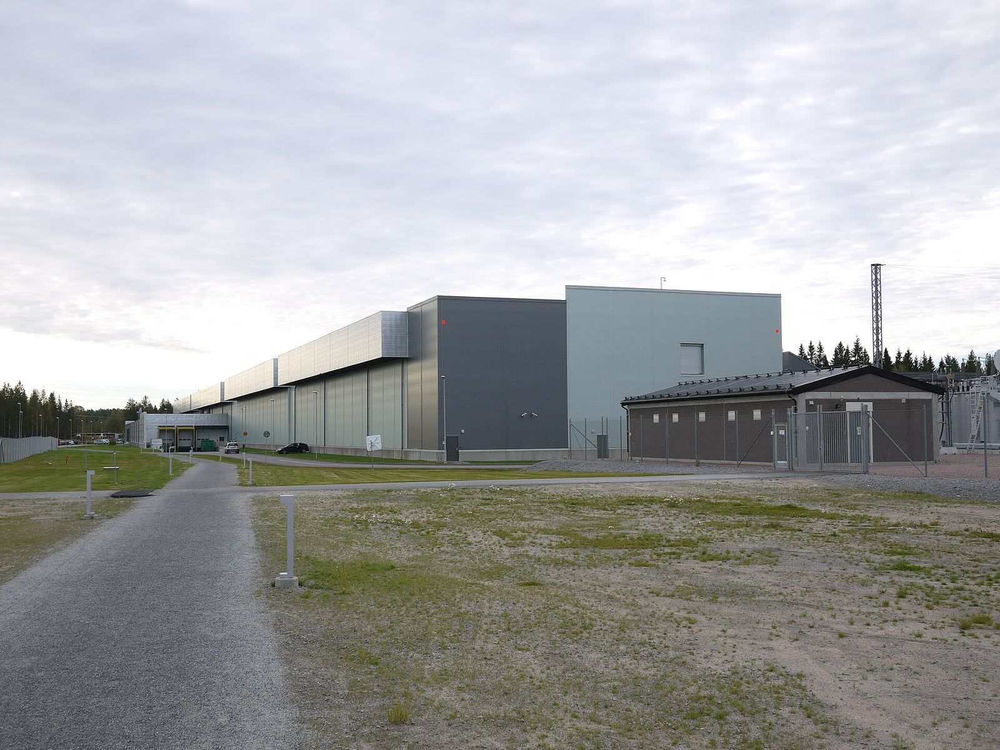

Meta 披露俄亥俄州 Prometheus 超级集群：一期已训练 Muse 模型，预训练有效训练时间逾 85%，满规模约 100 万块 GPU


Meta 10 月 19 日在工程博客发表长文，介绍位于俄亥俄州新奥尔巴尼的 AI 超级集群 Prometheus。Meta 称这是其「吉瓦级超级集群」，一期「已经完工」，目前由跨多栋互联建筑的数十万块 GPU 组成，满规模时将达约 100 万块分布式 GPU；一期已用于训练 Muse 系列模型，包括 Muse Wonder（见本站 10 月 12 日摘记）。站点既有传统与 AI 优化数据中心建筑、快速部署结构，也整合了战略合作方的租赁算力。
可靠性是全文重点。Meta 称，训练 Muse Wonder 时预训练的 goodput（扣除故障中断后的有效训练时间占比）超过 85%，强化学习超过 90%；平均中断间隔约 4.7 万 GPU 小时，固件修复后升至 5.4 万以上。2025 年年中，中断一度达到每 8000 块 GPU 每天近 1000 次，一年的工作使中断减少 99%；目标是每 8000 块 GPU 每天两次中断。
Meta 称，训练 Muse Wonder 时预训练的 goodput（扣除故障中断后的有效训练时间占比）超过 85%，强化学习超过 90%；平均中断间隔约 4.7 万 GPU 小时，固件修复后升至 5.4 万以上。
硬件上，Prometheus 运行英伟达 GB200 NVL72（Catalina）与 GB300 NVL72（Clemente）两种平台，基于 Vera Rubin 的第三种「即将到来」。72 块 GPU 的大域带来带宽，但 Meta 称故障「爆炸半径」比 8 卡系统大 9 倍，因此每个机柜只用 64 块参与训练、留 8 块作机柜内备用，另预留约 2% 的备用机柜。单栋建筑的后端以太网可互联最多 20,736 块 GPU，跨楼聚合网络跨越 2 公里到 100 多公里。
供电方面，数万块 GPU 在计算与通信间同步切换会造成集群内 30%–40% 的负载骤变，启停大型任务可在数秒内带来数十兆瓦的负载变化；Meta 用名为 Dynamo Dimmer 的软件逐步调整 GPU 功率上限，并辅以机柜电池、电容托盘和站点级储能。Meta 称在新奥尔巴尼支付站点全部能源成本，下一座超级集群 Hyperion（路易斯安那州）将吸收 Prometheus 的经验。以上数字均为 Meta 自述，未见第三方审计。
来源
摘记，不是官方媒体。goodput、中断率与规模数字均为 Meta 自述，未经独立核实。